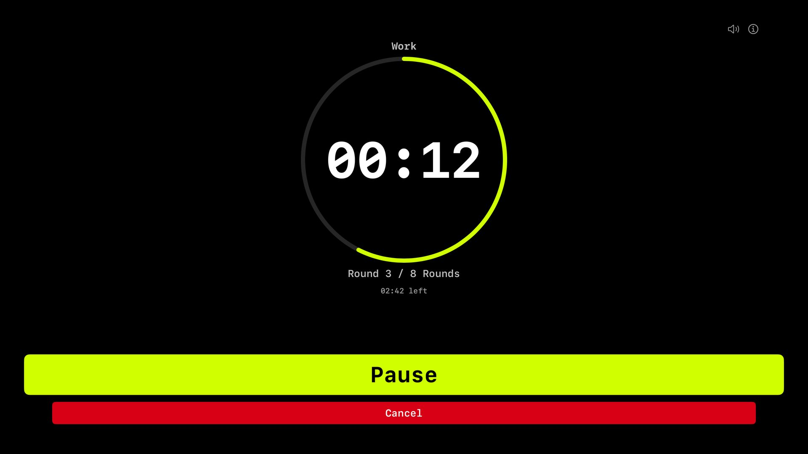
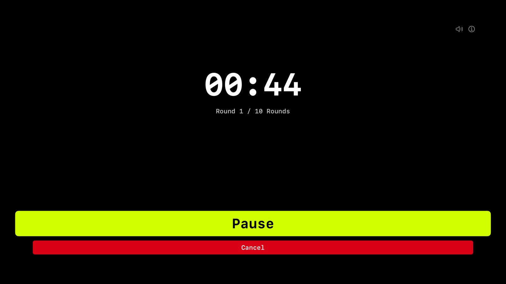

The clock on the wall
Apple TV
Gym Timer
Put WODrounds on the TV in your garage, home gym or box, and keep the phone out of the workout. EMOM, intervals and For Time run on the Apple TV itself, set up with the Siri Remote, with the time big enough to read from the rower. No account, no subscription.
$2.99 once · iOS 17 or later
One purchase covers Apple TV. Requires tvOS 17 or later.
What the room sees
During a workout the time is the biggest thing on the screen, in bold digits, with the round under it. Intervals adds Work or Rest above the time and a ring that drains over each phase. At every new round, and at every switch between work and rest, the whole screen flashes, so you catch the change even with your back to the TV.


How it works
-
The same three timers
EMOM with 1 to 120 rounds of 0:30 to 9:30. Intervals with 5 to 300 seconds of work, up to 180 seconds of rest and up to 60 rounds, so a Tabata is 20, 10 and 8. For Time counts up from zero, with an optional cap of up to 60 minutes.
-
Set up with the Siri Remote
Pick the mode, step the numbers up or down and press Start. A 10-second Get ready gives you time to put the remote down and get to the bar. Pause and Cancel are one click away, and Cancel asks before it throws the workout away. In For Time, Stop freezes your time.
-
Cues through the TV
A voice in English calls halfway and 10 seconds left in longer rounds, and 10, 5 and 2 rounds to go, and a beep counts 3-2-1 before every change. The beep is short and can get lost under loud music. The speaker button in the corner mutes it all.
-
Stays on the wall
The Apple TV screensaver stays away while the count-in or a workout is on the screen, and comes back once you are done. The app opens with the mode and the numbers you used last time.
What it doesn't do
The Apple TV runs WODrounds on its own. It doesn't sync with the iPhone or the Apple Watch, so a workout you start on the TV stays on the TV. It doesn't save to Apple Health, which only the iPhone and iPad do, and there are no haptics without a wrist to tap. The screens are in English, Danish and Spanish.
Questions
-
Do I need an iPhone to use it on Apple TV?
No. The Apple TV app sets up and runs EMOM, intervals and For Time by itself, with the Siri Remote. One purchase covers it, along with iPhone, iPad, Apple Watch and Mac.
-
Can I start a workout on my iPhone and show it on the TV?
No. A workout started on the iPhone shows live on the Apple Watch, not on the TV. On the TV, you start it with the Siri Remote.
-
Will I hear the cues over music?
The spoken cues play through the TV and whatever speakers it uses, in English. The 3-2-1 before each change is a short beep, and with loud music it can be easy to miss. Every change also flashes the whole screen.
Get WODrounds for the gym TV
Paid for once. The same purchase covers iPhone, iPad, Apple Watch, Mac and Apple TV.
$2.99 once · iOS 17 or later
Requires tvOS 17 or later
Related
-
Apple Watch Timer →
Follow a workout from the iPhone on your wrist, or run EMOM and Intervals on the Watch alone.
-
EMOM Timer →
Every Minute on the Minute. Set rounds and round length for CrossFit-style pacing.
-
Interval Timer →
Custom work and rest periods with any number of rounds. For HIIT, circuits and conditioning.
-
Tabata Timer →
20 seconds of work, 10 of rest, 8 rounds. Set it up as intervals.
-
For Time Timer →
Count up from zero and race the clock, with an optional time cap. For classic For Time WODs.